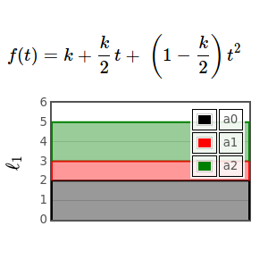
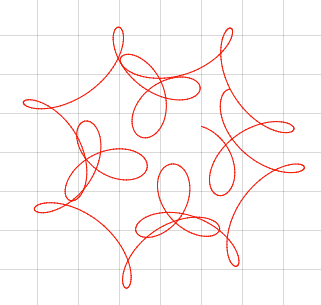
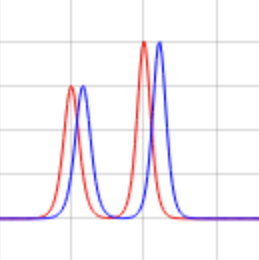

Scientific computing for the web.
A toy problem for compressive sensing
@garyballantyne, 9 July 2015
Three samples are required to reconstruct a quadratic signal (i.e., to find its coefficients). Unless the quadratic function is sparse (has only one nonzero coefficient) and we apply Compressive Sensing.
Mystery Curve
@mvclark, 7 July 2015
This example requires just 5 lines of new code (and editing a few lines of auto-generated code). Follow along and, in just a few moments, you can use this blab as a template for your own work.
Solitons
@garyballantyne, 7 July 2015
A soliton is a pulse that experiences both nonlinearity and dispersion. Nonlinearity sharpens the pulse—taller parts travel faster than shorter parts (like a wave breaking on a beach). Dispersion spreads it out—different frequencies travel at different speeds. With a soliton the sharpening and spreading balance exactly (and the balance is stable!).
Exploring the Interior of Pluto

@mvclark, 23 June 2015
Although we can never visit the interior of a far-off planet, we can use the observed mass and radius of the planet, plus some assumptions about what is inside (rock, water, ice, gas, etc) to create a plausible model of the interior of the planet.
Basic Properties of Mars as a Planetary Body

@mvclark, 17 June 2015
Mars is actually a very simple body. It is round, it spins, and it has mass. Although we can't visit the interior of Mars, or any other planet for that matter, there are ways that we can explore a planet's interior just by knowing a few basic things about it as a planet. In this lab, you will create a model of the interior of Mars by knowing three basic things about its bulk properties.